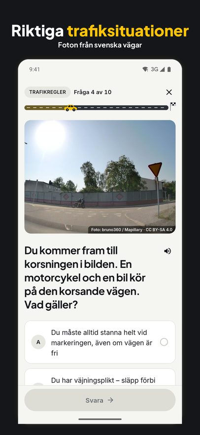
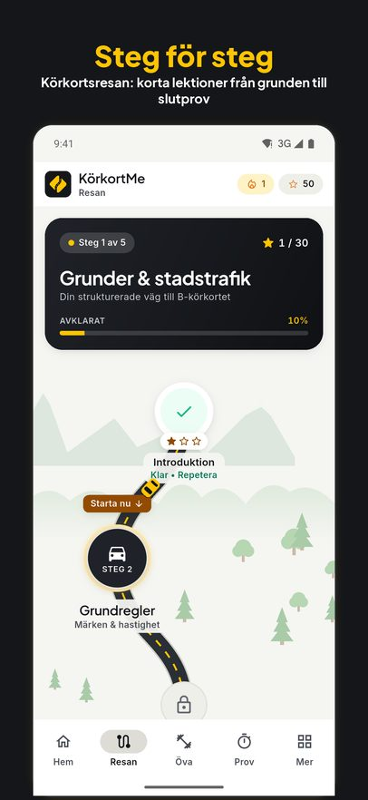
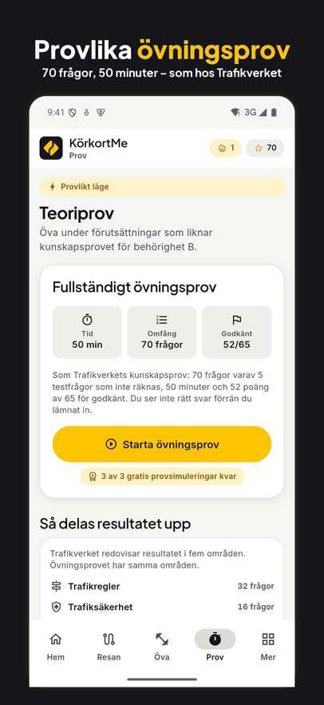
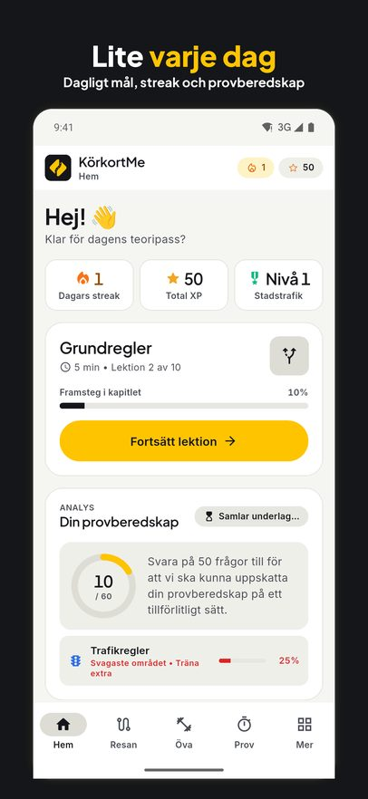
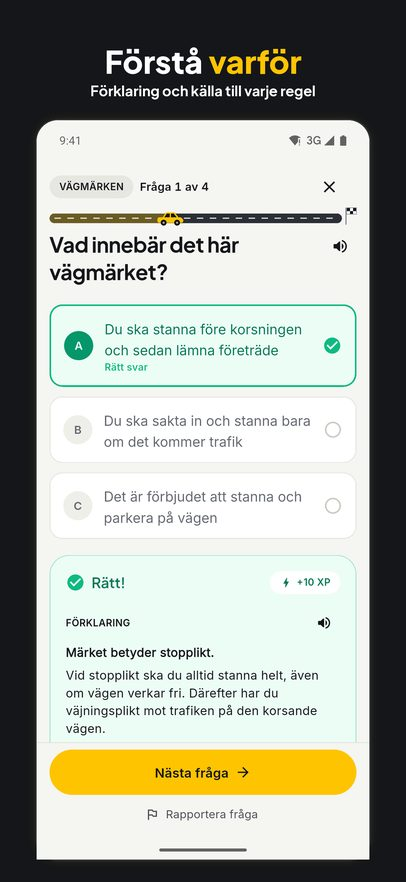
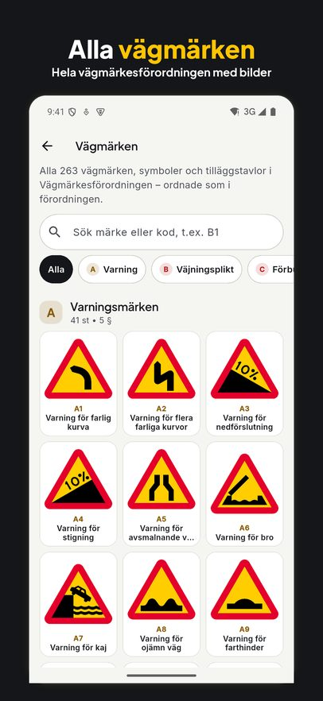

Ta körkortet.
En fråga i taget.
KörkortMe är övningsappen för teoriprovet. Korta lektioner, riktiga trafiksituationer, alla vägmärken och provlika övningsprov, med källa för varje regel.


Gratis att ladda ned. Premium låser upp alla frågor och obegränsade prov.

Allt du behöver inför teoriprovet
- Riktiga trafikfotonFrågor byggda kring foton från svenska vägar.
- KörkortsresanLektion för lektion, från grundregler och väjningsplikt till slutprov.
- Provlika övningsprov70 frågor på 50 minuter, med resultat i samma fem områden som hos Trafikverket.
- Alla vägmärkenHela vägmärkesförordningen med bilder, förklaringar och frågor.
- Förstå varförEfter varje svar får du en förklaring och källan till regeln.
- Utan kontoDina framsteg stannar i telefonen. Svenska och engelska.
Så ser det ut





Vanliga frågor
Hur går teoriprovet för B-körkort till?
Kunskapsprovet hos Trafikverket har 70 frågor, varav 5 är testfrågor som inte räknas. Du har 50 minuter på dig och behöver 52 rätt av 65 för att bli godkänd. Övningsproven i KörkortMe är upplagda på samma sätt.
Är KörkortMe gratis?
Appen är gratis att ladda ned. Det mesta av första kapitlet, den första lektionen i varje annat kapitel, alla vägmärken och tre övningsprov ingår gratis. Med Premium får du alla frågor och lektioner och obegränsade övningsprov. Premium köps för en period, från en vecka till tolv månader, och förnyas inte automatiskt.
Finns appen på engelska?
Ja. Appen finns på svenska och engelska, och i lektionerna kan du visa frågorna på svenska, som på provet.
Behöver jag skapa ett konto?
Nej. Du kommer igång direkt, och dina framsteg sparas bara i din telefon.
Är KörkortMe kopplad till Trafikverket?
Nej. KörkortMe är en fristående övningsapp. Det riktiga provet bokar du hos Trafikverket.
Börja plugga i dag
Ladda ned KörkortMe till iPhone eller Android.
KörkortMe är en fristående övningsapp och är inte kopplad till Trafikverket eller Transportstyrelsen. Apple och App Store är varumärken som tillhör Apple Inc. Google Play är ett varumärke som tillhör Google LLC.